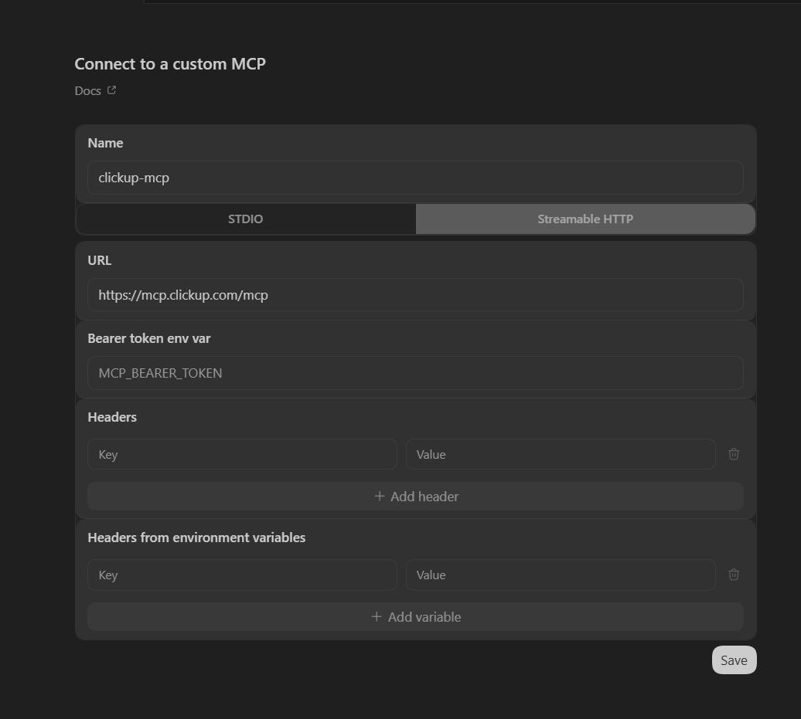
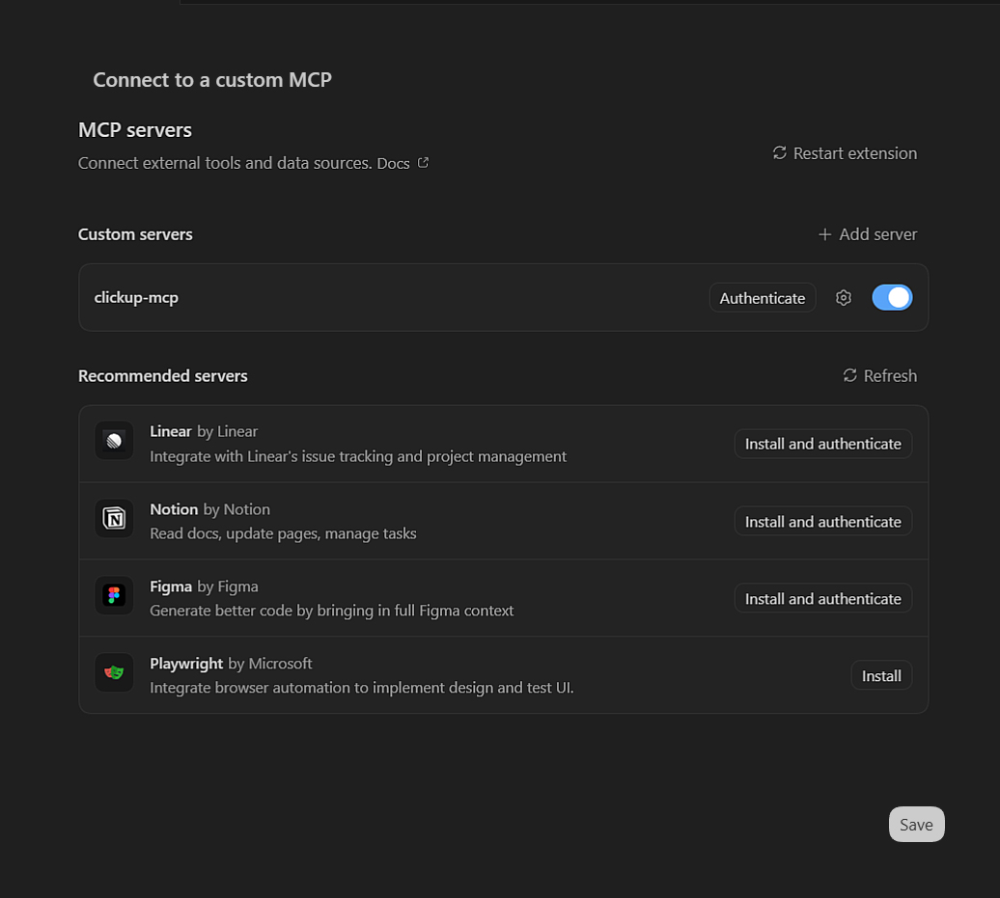

OpenAI Codex CLI¶
Esta guía detalla las características exclusivas de Codex CLI en cuanto a la gestión de contexto, habilidades, subagentes y automatización.
Gestión de Contexto (Agents.md Guides)¶
AGENTS.md y Overrides¶
Codex utiliza AGENTS.md como estándar principal, permitiendo priorizar reglas mediante AGENTS.override.md.
Límites y Configuración de Proyecto¶
Impone un límite de 32 KiB (project_doc_max_bytes) para la cadena de instrucciones. Permite configurar nombres alternativos con project_doc_fallback_filenames.
Estructura de Directorios¶
~/.codex/AGENTS.md (Global — preferencias universales del usuario)
mi-proyecto/
├── AGENTS.md (Proyecto — reglas base del repositorio)
├── AGENTS.override.md (Proyecto — anula el AGENTS.md local)
└── src/
└── api/
└── AGENTS.override.md (Modulo — anula reglas para este subdirectorio)
Skills (Habilidades)¶
Codex CLI tiene la arquitectura de Skills más explícita del ecosistema: en lugar de un simple archivo SKILL.md autodescriptivo, requiere un manifiesto YAML (agents/openai.yaml) que declara formalmente cada habilidad disponible en el proyecto. Este manifiesto controla si la skill puede invocarse automáticamente o solo de forma manual, qué servidores MCP necesita activos para funcionar, y cómo se presenta visualmente en la UI.
Las skills siguen el mismo orden de descubrimiento que AGENTS.md: global (~/.agents/skills/), proyecto (.agents/skills/). Sin embargo, el manifiesto YAML actúa como registro de autoridad: si una skill no está declarada en él, no puede ser invocada por Codex aunque el archivo SKILL.md exista.
Estructura de Directorio¶
~/.agents/skills/
└── my-global-skill/
└── SKILL.md (Disponible en todos los proyectos)
mi-proyecto/
├── agents/
│ └── openai.yaml (Manifiesto de habilidades del proyecto)
└── .agents/
└── skills/
└── code-formatter/
└── SKILL.md
Ejemplo Completo: Manifiesto (agents/openai.yaml)¶
skills:
- name: "code-formatter"
display_name: "Code Formatter"
description: "Formats code according to project standards using ESLint and Prettier."
icon: "magic-wand"
brand_color: "#3B82F6"
allow_implicit_invocation: true
dependencies:
- "local-linter-mcp"
- name: "api-reviewer"
display_name: "API Reviewer"
description: "Reviews REST endpoints for security and OpenAPI compliance."
icon: "shield"
allow_implicit_invocation: false
dependencies:
- "github-mcp"
Tip
Usa allow_implicit_invocation: false en skills destructivas o de alto impacto. Esto garantiza que el agente nunca las active automáticamente por inferencia semántica; solo se invocan cuando el usuario las menciona explícitamente.
Fuente: Codex: Developers Skills
MCP (Model Context Protocol)¶
Configuración Compartida (CLI/IDE)¶
Codex sincroniza sus servidores MCP entre la terminal (CLI) y la extensión del IDE mediante un archivo config.toml. Soporta transportes STDIO (procesos locales) y Streamable HTTP (servidores remotos).
Gestión de Servidores¶
Puedes gestionar servidores mediante comandos (codex mcp add) o editando directamente el archivo de configuración. Soporta autenticación mediante Bearer Tokens y flujos OAuth nativos (codex mcp login).
Opciones de Configuración¶
Dentro de [mcp_servers.<alias>], se aceptan los siguientes parámetros:
- Para STDIO:
command(requerido),args,cwdyenv(mapa de variables). - Para HTTP:
url(requerido),bearer_token_env_var,http_headers(estáticos) yenv_http_headers(mapeo a variables de entorno). - Control de Ejecución:
enabled: Permite desactivar un servidor sin borrarlo.required: Si estrue, Codex fallará al arrancar si el servidor no inicializa.enabled_tools: Allowlist de herramientas.disabled_tools: Denylist de herramientas (se aplica después del allowlist).startup_timeout_sec(Default: 10) ytool_timeout_sec(Default: 60).
Estructura de Directorio¶
Note
En entornos Windows, la inyección de variables de entorno en los comandos o configuraciones debe usar la sintaxis %VAR_NAME%.
Ejemplo de Configuración (config.toml)¶
[mcp_servers.context7]
command = "npx"
args = ["-y", "@upstash/context7-mcp"]
[mcp_servers.context7.env]
MY_API_KEY = "%CONTEXT7_TOKEN%"
[mcp_servers.figma-remote]
url = "https://mcp.figma.com/mcp"
bearer_token_env_var = "FIGMA_OAUTH_TOKEN"
enabled_tools = ["get_file", "get_comments"]
tool_timeout_sec = 45

Fuente: Codex CLI: MCP Developers
Hooks (Disparadores)¶
Tip
Consulta Hooks: Interceptación Determinista para la referencia completa de eventos, protocolo stdin/stdout, scripts de producción y anti-patrones.
Codex CLI implementa hooks con el mismo esquema JSON que Claude Code — la diferencia está en el directorio de configuración (.codex/hooks.json) y en el contexto de ejecución. Los scripts pueden estar en cualquier lenguaje; Python es el más usado por su capacidad de parsear y analizar el JSON de entrada de forma natural.
Eventos Disponibles¶
| Evento | Momento de Disparo |
|---|---|
PreToolUse |
Antes de ejecutar cualquier herramienta (filtrable por matcher) |
PostToolUse |
Después de que la herramienta retorna su resultado |
Schema de Configuración (.codex/hooks.json)¶
| Campo | Tipo | Descripción |
|---|---|---|
matcher |
string | Nombre de la herramienta a interceptar (Bash, Write, Edit, etc.) |
type |
string | Tipo de hook: command (único tipo disponible actualmente) |
command |
string | Comando a ejecutar (recibe JSON via stdin) |
statusMessage |
string | Mensaje visible al usuario mientras el hook corre |
Estructura de Directorio¶
Ejemplo de Configuración (.codex/hooks.json)¶
{
"hooks": {
"PreToolUse": [
{
"matcher": "Bash",
"hooks": [
{
"type": "command",
"command": "/usr/bin/python3 \".codex/hooks/pre_tool_use_policy.py\"",
"statusMessage": "Checking Bash command policy"
}
]
}
]
}
}
Ejemplo: Política de Comandos Bash (pre_tool_use_policy.py)¶
#!/usr/bin/env python3
# Blocks destructive bash commands before execution.
import sys
import json
import re
data = json.loads(sys.stdin.read())
command = data.get("tool_input", {}).get("command", "")
BLOCKED_PATTERNS = [
r"rm\s+-rf\s+/",
r"rm\s+-rf\s+~",
r"DROP\s+TABLE",
r"git\s+push\s+--force",
r">\s*/dev/sd",
]
for pattern in BLOCKED_PATTERNS:
if re.search(pattern, command, re.IGNORECASE):
print(f"BLOCKED: Command matches restricted pattern: {pattern}", file=sys.stderr)
sys.exit(2)
sys.exit(0)
Fuente: Codex CLI: Hooks
Subagentes¶
Tip
Consulta los Patrones Avanzados Multi-Agente para estrategias generales de orquestación, contratos de datos estrictos y housekeeping antes de diseñar tu sistema.
Codex CLI es la única herramienta del ecosistema que usa TOML en lugar de Markdown para definir subagentes. Esta elección prioriza configuración tipada sobre legibilidad narrativa, haciendo los campos estrictamente declarativos. El orquestador puede instanciar múltiples subagentes en paralelo o en secuencia según la tarea, y cada uno opera en un sandbox_mode que define qué nivel de acceso tiene al sistema de archivos.
Modos de Sandboxing¶
sandbox_mode |
Acceso | Cuándo usarlo |
|---|---|---|
read-only |
Solo lectura del workspace | Revisores, auditores, analizadores |
workspace-write |
Lectura y escritura en el directorio del proyecto | Builders, generadores de código |
network |
Lectura, escritura y acceso a red | Agentes que consultan APIs externas |
Estructura de Directorio¶
Schema de Configuración (campos disponibles)¶
| Campo | Tipo | Descripción |
|---|---|---|
name |
string | Identificador del agente (sin espacios) |
description |
string | Cuándo invocarlo (el orquestador lo lee para decidir la delegación) |
model |
string | Modelo en formato OpenAI (ej. gpt-5.4, gpt-5.3-codex) |
sandbox_mode |
string | Nivel de acceso: read-only, workspace-write, network |
developer_instructions |
multiline string | System prompt completo del agente |
Ejemplo: Revisor de Código (reviewer.toml)¶
name = "reviewer"
description = "Reviews code for correctness, security, and missing tests. Use before merging any PR."
model = "gpt-5.4"
sandbox_mode = "read-only"
developer_instructions = """
Review the provided code changes like an owner. Prioritize:
1. Correctness and unhandled edge cases
2. Security vulnerabilities (injection, auth bypass, secrets)
3. Missing or insufficient test coverage
4. Behavior regressions compared to the original implementation
Return findings as a structured list:
- File, line number, severity (critical/high/medium/low), issue, suggested fix
Do NOT approve if critical issues exist. Be specific — no generic feedback.
"""
Ejemplo: Builder Autónomo (builder.toml)¶
name = "builder"
description = "Implements code based on a provided architectural plan. Use after architect defines the structure."
model = "gpt-5.3-codex"
sandbox_mode = "workspace-write"
developer_instructions = """
You implement code. You receive a structured plan and execute it file by file.
Rules:
- Follow the plan exactly. Do not add unrequested features.
- Apply all conventions from AGENTS.md in the project root.
- After each file change, output a brief summary of what was modified.
- If a plan step is ambiguous, return an error instead of guessing.
- On failure, revert partial changes with git checkout before reporting.
"""
Fuente: Codex CLI: Subagents Guide
Automatización y Scripting¶
Codex CLI está diseñado desde el principio para automatización. El comando codex exec es distinto al modo interactivo codex: acepta el prompt como argumento, ejecuta sin TTY y retorna códigos de salida estándar. El flag --full-auto elimina todas las confirmaciones interactivas, haciendo al agente completamente autónomo para su uso en pipelines.
Flags de codex exec¶
| Flag | Descripción |
|---|---|
--full-auto |
Modo totalmente autónomo — sin confirmaciones de ningún tipo |
--sandbox MODE |
Nivel de sandboxing: read-only, workspace-write, network |
--output-schema PATH |
Valida el output JSON contra un schema (falla con exit 1 si no cumple) |
--max-steps N |
Límite de pasos de ejecución (previene bucles infinitos) |
--model ID |
Override del modelo para esta ejecución |
--quiet |
Suprime output de progreso, solo emite el resultado final |
Flujo de Sandboxing¶
# Análisis de solo lectura — sin modificaciones al workspace
codex exec "Audit all API endpoints for missing auth middleware" \
--full-auto \
--sandbox read-only
# Refactorización autónoma — escritura limitada al workspace
codex exec "Migrate all .then() chains to async/await in src/" \
--full-auto \
--sandbox workspace-write \
--max-steps 30
# Con validación de schema — el pipeline falla si el output no tiene la estructura esperada
codex exec "Generate a dependency report" \
--full-auto \
--sandbox read-only \
--output-schema ./schemas/dependency-report.json \
--quiet > report.json
Output Schema (Validación Estructurada)¶
El flag --output-schema garantiza que el agente devuelva un JSON válido que sigue la estructura definida, o el proceso termina con código 1. Esto previene que output malformado rompa las etapas siguientes del pipeline.
{
"$schema": "http://json-schema.org/draft-07/schema#",
"type": "object",
"required": ["summary", "findings", "recommendation"],
"properties": {
"summary": { "type": "string" },
"findings": {
"type": "array",
"items": {
"type": "object",
"required": ["file", "issue", "severity"],
"properties": {
"file": { "type": "string" },
"issue": { "type": "string" },
"severity": { "enum": ["critical", "high", "medium", "low"] }
}
}
},
"recommendation": { "type": "string" }
}
}
Ejemplo: Refactorización Masiva en CI/CD¶
name: AI Refactoring Pipeline
on:
workflow_dispatch:
inputs:
task:
description: 'Refactoring task description'
required: true
jobs:
refactor:
runs-on: ubuntu-latest
steps:
- uses: actions/checkout@v4
- name: Run Codex refactoring
run: |
codex exec "${{ github.event.inputs.task }}" \
--full-auto \
--sandbox workspace-write \
--max-steps 40 \
--output-schema ./schemas/refactor-result.json > result.json
env:
OPENAI_API_KEY: ${{ secrets.OPENAI_API_KEY }}
- name: Commit and open PR
run: |
git config user.name "Codex Bot"
git config user.email "bot@company.com"
git checkout -b codex/refactor-${{ github.run_id }}
git add -A
git commit -m "refactor: $(jq -r '.summary' result.json)"
gh pr create \
--title "Codex Refactor: $(jq -r '.summary' result.json)" \
--body "$(jq -r '.recommendation' result.json)" \
--base main
env:
GH_TOKEN: ${{ secrets.GITHUB_TOKEN }}

Fuente: Codex: Non-interactive Usage